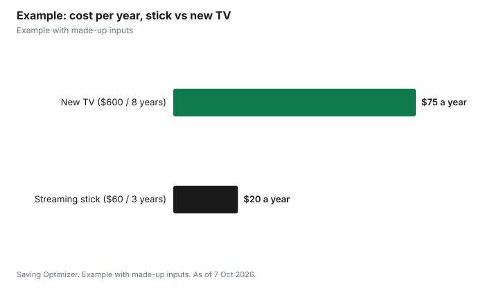

Technology · Canada
Streaming Sticks vs Smart TV Apps in Canada: Do You Need Another Device?
This post contains Amazon.ca affiliate links. If you buy through them, Saving Optimizer may earn a commission at no extra cost to you.
If your smart TV already runs every streaming app you use, loads them quickly and still gets software updates, you do not need a streaming stick. A stick or box is worth buying when an app you want is missing or no longer supported on your TV, the menus are slow, the TV is a few years old but the picture is still good, or you want the same simple interface on every TV in the house. In those cases, a device is often far cheaper than a new TV. Before you buy, list the apps you actually use, check that your TV's own app store still offers them, and remember that the subscriptions, not the device, are where most streaming money goes.
Key takeaways
- No stick needed if your TV's apps cover what you watch and still update.
- A stick can revive an older TV with a good picture for much less than a new TV.
- Apple TV 4K lists at $279 or $349 on Apple Canada; Google TV Streamer lists at CA$129.99.
- Match the device to your TV: 4K and HDR only matter if the TV supports them.
- Subscriptions cost more than any device; audit them before buying hardware.
- Example with made-up inputs: stick vs new TV for a seven-year-old set.
Signs your TV's apps are good enough
- Every service you pay for, plus free ones such as CBC Gem, is in the TV's app store.
- Apps open in a few seconds and do not crash or freeze.
- The TV still receives software updates; look in the settings menu for the update section and the date of the last update.
- You are happy with the remote and the home screen.
- The household watches on one main TV, so a consistent interface across rooms does not matter.
If all of those are true, spend nothing. Many people buy a stick out of habit and leave the TV's own apps unused.
Try these fixes before buying anything
A slow or glitchy smart TV can sometimes be fixed for free. Work through these steps first, in order, and give the TV a few days of normal use after each one:
- Install any pending software update from the TV's settings menu, then restart the TV by unplugging it for a minute.
- Uninstall apps you never use, which frees storage on TVs with little memory.
- Clear the cache or data for the app that misbehaves, or uninstall and reinstall it, then sign in again.
- Check the internet connection: test the speed on a phone next to the TV, move the router closer, or use an Ethernet cable if the TV has a port.
- Turn off features you do not use, such as voice assistants, screen savers that pull images from the internet, or auto-playing previews on the home screen.
- As a last step, do a factory reset, knowing you will need to sign in to every app again.
If the TV is fast after these steps and every app you use is there, you have saved the cost of a device. If an app is still missing, or the TV is still slow, a stick is the next step. Buy from a store with a clear return window, so you can return it if it does not solve the problem; see where to buy electronics.
When a streaming stick or box is worth it
| Situation | Why a device helps |
|---|---|
| An app you use has disappeared or stopped updating on your TV | A current device gets the latest app versions |
| Menus are slow or apps crash | Newer processors in a stick or box can be much faster than an older TV |
| The TV is older but the picture is still good | Much cheaper than replacing the TV |
| Several TVs with different brands | One interface and one set of logins across the house |
| You want features the TV lacks | For example, a newer video or audio format, or casting from a phone |
| A TV with no smart features at all | Turns any TV with an HDMI port into a streaming TV |
What devices cost
Prices vary by retailer and change often, especially around Black Friday. As a reference, the makers' own Canadian stores list these prices as of 7 October 2026:
| Device | List price | Notes from the maker's page |
|---|---|---|
| Apple TV 4K (Wi-Fi), 64GB | $279.00 | Apple Canada online store |
| Apple TV 4K (Wi-Fi + Ethernet), 128GB | $349.00 | Adds Ethernet and Thread networking |
| Google TV Streamer (4K) | CA$129.99 | Google Store Canada |
Roku and Amazon Fire TV devices, such as the Roku Streaming Stick and the Fire TV Stick 4K, are also widely sold in Canada, often at lower prices than these boxes, with frequent sales. Compare the model's maximum resolution, Wi-Fi standard and remote features rather than the brand alone, and check the price history before treating a sale as a deal. Check any stick against your TV using the list below, and only buy one if your TV's own apps failed the checks earlier on this page.
Match the device to your TV
- Resolution: a 4K device only shows 4K on a 4K TV. On an older 1080p TV, a basic HD model does the job.
- HDR formats: HDR10, Dolby Vision and HDR10+ only matter if your TV supports them.
- Audio: Dolby Atmos only matters with a compatible soundbar or receiver.
- Wi-Fi vs Ethernet: a wired connection helps if your Wi-Fi is weak where the TV is. Some sticks need an adapter for Ethernet; for Fire TV sticks that is the Amazon Ethernet Adapter, so check that it lists your model.
- Power: some sticks can run from the TV's USB port, others need a wall outlet. Use the included power adapter if the stick warns of low power.
- Remote: a remote that controls TV power and volume saves juggling two remotes.
The real cost is the subscriptions
A device is a one-time cost. Subscriptions are monthly, and two or three services can cost more in a year than any streaming box. Before buying hardware, run a subscription audit, consider rotating services month to month, and use free legal streaming such as CBC Gem and your library's apps. If you are paying for cable as well, see cutting cable and keeping internet.
Privacy and ads
Smart TVs and streaming devices can collect viewing information and show ads on the home screen. Both TVs and sticks usually let you limit this in the privacy or ad settings; look for options about viewing data, personalized ads or content recognition and turn off what you do not want. A stick does not automatically mean more or less data collection than the TV; it depends on the settings on each. If you add a stick and stop using the TV's apps, you can also disconnect the TV itself from Wi-Fi.
Should you replace the TV instead?
If the TV's picture is dim, has dead pixels, or the screen is too small for the room, a stick will not fix that. Our guide on when to upgrade a TV covers that decision, and buying a TV on Black Friday covers what to look for if you do replace it.
Example with made-up inputs
These numbers are an example with made-up inputs. A household has a seven-year-old 55-inch TV with a good picture, but its app for one paid service stopped working and menus take ten seconds to load. Option one: a $60 streaming stick on sale. Option two: a new 55-inch TV for $600. If the old TV's picture lasts three more years, the stick costs $20 a year, while the new TV, kept for eight years, costs $75 a year. The stick is the better buy unless the household also wanted a bigger or better screen.
| Option | Upfront | Expected years | Cost per year |
|---|---|---|---|
| Streaming stick | $60 | 3 | $20 |
| New TV | $600 | 8 | $75 |

Common mistakes
- Buying a 4K stick for a 1080p TV and paying for features you cannot see.
- Buying a stick when the TV's own apps already work well.
- Replacing a TV with a good picture just because its apps are slow.
- Ignoring subscription costs, which add up far faster than the device.
- Leaving default ad and viewing-data settings on without looking.
Sources
- Apple Canada, Buy Apple TV 4K (Wi-Fi 64GB $279.00; Wi-Fi + Ethernet 128GB $349.00), apple.com/ca, as of 7 Oct 2026.
- Google Store Canada, Google TV Streamer (4K) CA$129.99, store.google.com/ca, as of 7 Oct 2026.
- Device prices, lifespans and TV prices in the worked example are made-up inputs.
Frequently asked questions
Do I need a streaming stick if I have a smart TV?
Not if your TV's apps cover every service you use, run smoothly and still get updates. A stick helps when apps are missing, slow or no longer supported.
How much does an Apple TV 4K cost in Canada?
Apple Canada's online store lists the Apple TV 4K (Wi-Fi, 64GB) at $279.00 and the Wi-Fi + Ethernet model with 128GB at $349.00, as of 7 Oct 2026.
How much is the Google TV Streamer in Canada?
The Google Store Canada lists the Google TV Streamer (4K) at CA$129.99, as of 7 Oct 2026. Retailer prices can differ.
Is a streaming stick cheaper than a new TV?
Usually much cheaper. If the TV's picture is still good, a stick can fix missing or slow apps for a fraction of the price of a new TV.
Do I need a 4K streaming device?
Only if your TV is 4K. On a 1080p TV, a basic HD device shows the same picture.
Can I stop my TV from tracking what I watch?
Most TVs and streaming devices let you limit viewing data and personalized ads in their privacy settings. Turn off the options you do not want on each device.
Researched and drafted with AI assistance and fact-checked against official Canadian sources. How we create content.
Disclosure: This page contains Amazon.ca affiliate links. As an Amazon Associate, Saving Optimizer earns from qualifying purchases. Education only.